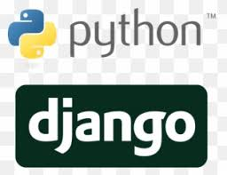

Framework
Los frameworks son herramientas poderosas que permiten a los desarrolladores centrarse más en la lógica específica de su aplicación y menos en los detalles de implementación comunes.
Frameworks de Programacion
Ruby on Rails
Un framework web basado en el lenguaje de programación Ruby, que también sigue el patrón MVC y favorece la convención sobre la configuración.
.png)
Angular
Un framework de desarrollo front-end mantenido por Google para la construcción de aplicaciones web de una sola página (SPA).
.png)
Express
Un marco web minimalista para Node.js que simplifica el desarrollo de aplicaciones web y API la elección de un framework puede depender.
.png)
Django
Un framework web de Python que sigue el patrón MVC y facilita el desarrollo rápido y limpio de aplicaciones web.
Spring
Un framework de desarrollo de aplicaciones empresariales para Java que proporciona una amplia gama de funcionalidades, incluido el manejo de transacciones, la seguridad y la integración con bases de datos.
.png)